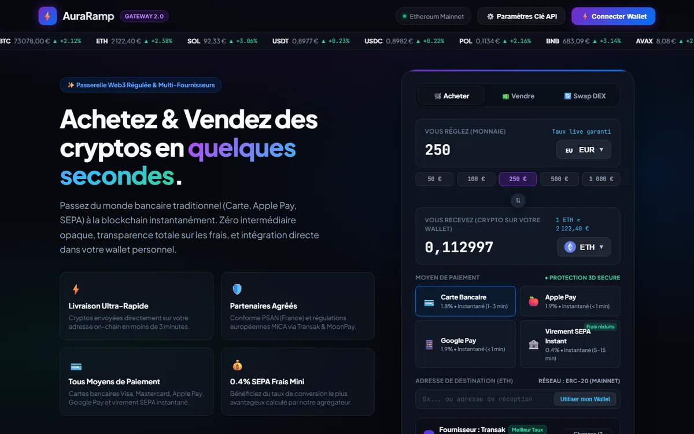

Sites web
Sites vitrines rapides, bien référencés sur Google et faciles à faire évoluer.
Bonjour, je suis
Développeur web & designer
Basé à Abidjan, je fabrique des sites, des applications et des images pour des commerces réels : un showroom de peinture, des artisans, des entrepreneurs qui lancent leur projet. De l'idée jusqu'à la mise en ligne.
Mes services
Du site vitrine à l'outil de gestion interne, en passant par l'image de marque et la vidéo. Un seul interlocuteur, du cahier des charges à la mise en ligne.
Sites vitrines rapides, bien référencés sur Google et faciles à faire évoluer.
Caisse, stock, ventes, rapports : installables sur mobile et PC, utilisables hors connexion.
Bots et scripts qui préparent devis, factures et inventaires à votre place.
Logo, charte graphique, documents d'entreprise et maquettes d'interface.
Écriture, voix off, montage et animation pour les réseaux sociaux et YouTube.
Images aériennes de chantiers, de bâtiments et d'événements.
Mes outils
Je choisis l'outil selon le besoin, pas l'inverse. Et je travaille avec des agents de code (Claude Code, Cursor) comme co-pilotes : je décide, je relis, je vérifie.
Voir les résultatsSites, design system
TypeScript, Vite
Interfaces d'apps
Bots, scripts, PDF
PostgreSQL, droits RLS
Maquettes, chartes
Animation en code, FFmpeg
Vitest, Playwright, git

À propos de moi
Développeur web & designer graphique
Étudiant en licence Informatique et Développement d'Applications (option génie logiciel) à HEC Abidjan, je viens aussi du terrain : vente, communication digitale et organisation d'entreprise. Aujourd'hui je suis au comptoir du showroom ABRIKO, et je construis les outils qui le font tourner.
Ma conviction : un outil qui ignore la réalité du terrain ne sera pas utilisé. Je commence donc toujours par observer comment on travaille au comptoir, avant d'écrire la moindre ligne de code.
Showroom franchisé Seigneurie® d'Angré : comptoir, caisse, stock et documents de vente. J'y ai créé le site, l'application de gestion et le bot qui prépare devis et factures.
Identités visuelles, maquettes, applications et vidéos pour des porteurs de projet.
Réseaux sociaux (Facebook, LinkedIn, TikTok, Instagram), identité visuelle de la marque, contenus photo et vidéo.
Communication globale, partenariats, coordination des équipes terrain, supports visuels et organisation interne.
Vente et conseil client en boutique et en ligne, prospection, fidélisation et suivi des commandes.
Développement d'applications, option génie logiciel : web, gestion de projet, modélisation de données, IA.
Mon portfolio
Cliquez sur un projet pour voir le problème, la solution et les outils. Le code des clients reste privé ; je montre le résultat et la démarche.

Site vitrine · showroom Seigneurie®
Le premier showroom franchisé Seigneurie® de Côte d'Ivoire n'avait aucune présence en ligne, et deux premières maquettes avaient été jugées « correctes mais sans vie ».
Une idée centrale : la couleur est une matière qu'on fabrique ici. Le visiteur choisit une teinte du nuancier et elle repeint tout le site en direct ; les contrastes du texte sont recalculés à chaque changement pour rester lisibles, du blanc cassé au bleu nuit. Matière, relief et mouvement pour la troisième direction artistique, retenue.
Caisse, stock, ventes · hors connexion
Ventes, caisse et stock suivis à la main ou dans des classeurs dispersés, avec une connexion internet instable.
Une application installable sur mobile et PC qui fonctionne hors connexion. Les droits de chaque rôle (vendeur, gérant, direction) sont appliqués dans la base elle-même, pas seulement dans l'interface.
Un mode démo tourne à 100 % dans le navigateur avec des données fictives. Tests unitaires, tests SQL des droits et parcours de bout en bout automatisés.
Code privé — client
Devis, factures et caisse automatisés
Chaque devis, facture ou bon de commande était refait à la main, avec des risques d'erreur de prix et de numérotation.
Un assistant Telegram qui prépare factures, devis et bons de commande aux normes de l'entreprise, tient le journal de caisse et suit le stock. Autour, des scripts qui inventorient des milliers de fichiers et récupèrent les données d'un ancien logiciel de gestion.
Le code est publié par liste blanche : seuls les fichiers explicitement autorisés quittent la machine, jamais les données clients.
Code privé — client

Tableau de bord pro & perso
Deux mondes qui ne doivent pas se mélanger : le comptoir du showroom (caisse, relances, devis, stock) et le suivi personnel (habitudes, objectifs, planning).
Un seul tableau de bord, mené spécification d'abord : vision produit, user stories, modèle de données et charte UX écrits avant la première ligne de code, puis confiés à un agent de code.

Prototype fintech
Une passerelle entre l'argent bancaire et les cryptomonnaies : bandeau de cours en continu, calculateur de conversion, comparaison des frais par moyen de paiement et choix du fournisseur le moins cher.
Prototype d'interface : aucune transaction réelle n'est effectuée.
Essayer une tenue vue sur TikTok
Tu vois une tenue sur TikTok ou Pinterest, tu colles le lien, tu l'essaies sur toi en 30 secondes.
Application installable sur le téléphone, avec une fonction serveur qui ne va chercher les images que sur une liste de sites autorisés.

Motion design · 5 chapitres
« Un œuf peut se casser de deux façons. » Vidéo verticale de près de trois minutes en cinq chapitres, déclinée en cinq reels. Silhouettes en traits lumineux, accents rouges, voix off posée.
Écrite, mise en voix et animée entièrement en code : le script devient des scènes, les scènes deviennent des images, rendues automatiquement.

Chaîne vidéo · identité
Une chaîne qui interroge ce qu'on nous a appris à croire, vu depuis l'Afrique et parlé à toute la francophonie. Le logo reprend le symbole adinkra Sankofa : « retourne chercher ce que tu as laissé derrière toi ».
Ligne éditoriale, séries, charte visuelle et une chaîne de production en sept étapes par vidéo, de l'idée au montage.
Comment je travaille
Inventaire de l'existant : fichiers, classeurs, habitudes du comptoir.
Utilisateurs, besoins, données, écrans. Un document clair vaut dix allers-retours.
Chaque lot est livrable seul, vérifié puis enregistré.
Tests automatisés, droits dans la base, aucune clé dans le code publié.
Mise en ligne, guide d'utilisation et suivi après livraison.
Ils m'ont fait confiance
« Texte de l'avis à remplacer. »
« Texte de l'avis à remplacer. »